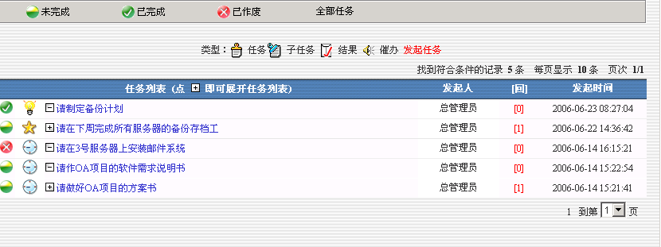
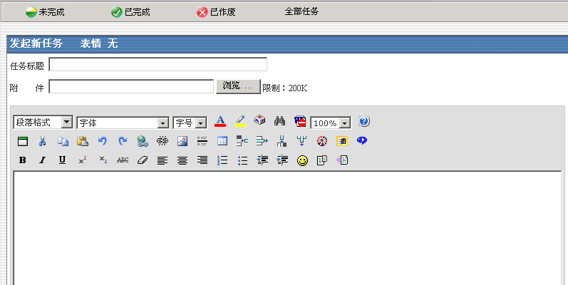
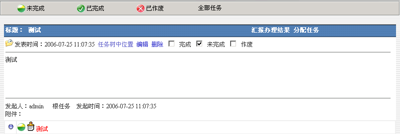
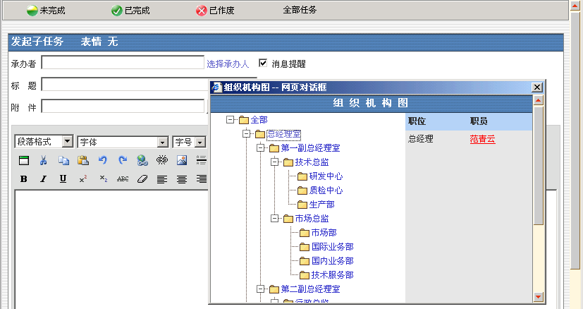

任务督办 |
| “行政管理”下的“任务督办”是用于显示检查任务办理情况。如下图： |
 |
| 点击“未完成”显示所有未完成的任务。 |
| 点击“已完成”显示所有已完成的任务。 |
| 点击“已作废”显示所有已作废的任务。 |
| 点击“全部”显示所有全部的任务。 |
| 发起任务是树型方式组织展开任务。点击“发起任务”出现下图： |
|  |
| 填入相关信息后，点击"发起任务"将自动跳转到发起任务页面。 |
| 分配任务:将任务指定分配给某人。点击任务列表中的标题，出现下图： |
|  |
| 点击“分配任务”如图： |
|  |
| 点击选择承办人。选取“承办人”后填入相关任务信息。点击“确定”分配任务完成。 |
| 汇报办理结果：将任务完成情况汇报给发起人，同发起子任务操作类似。 |